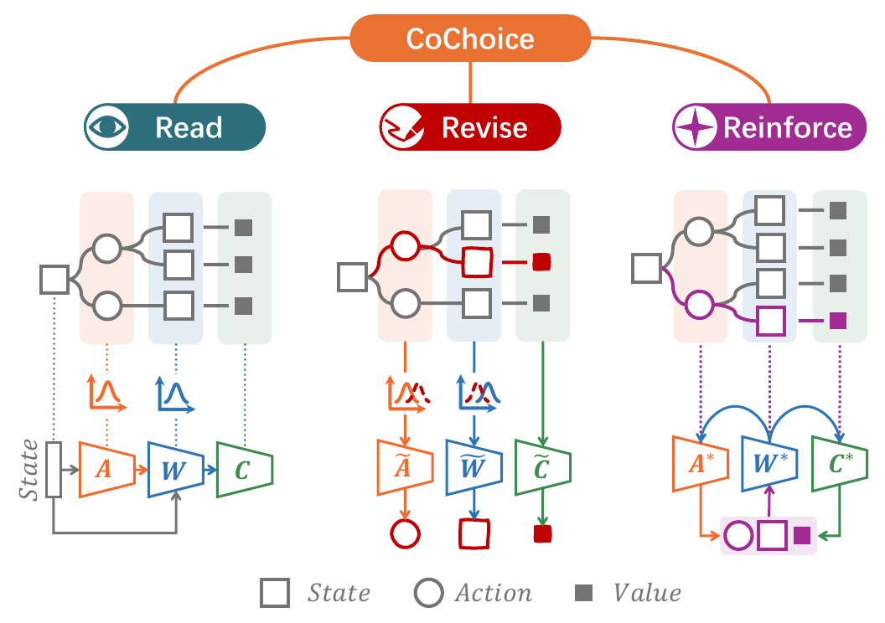
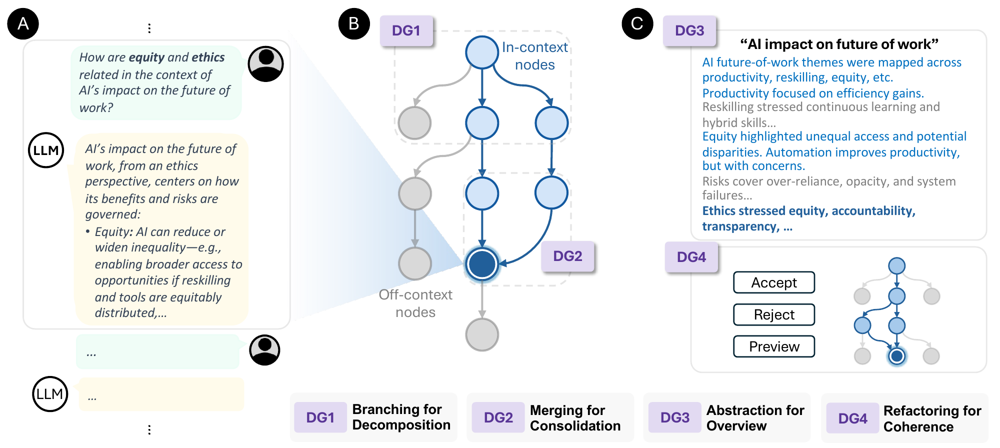
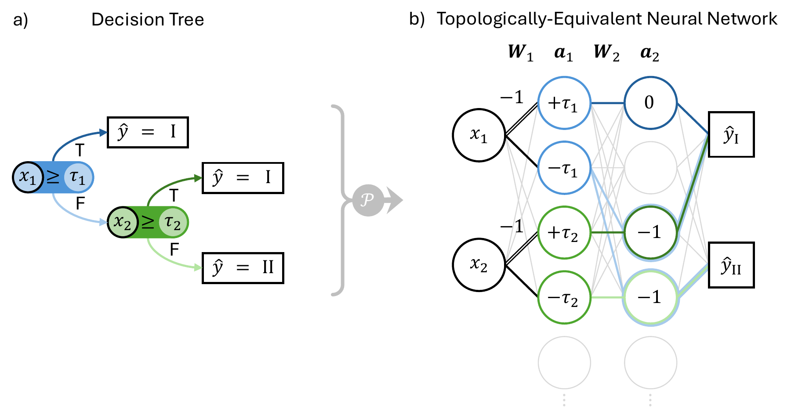
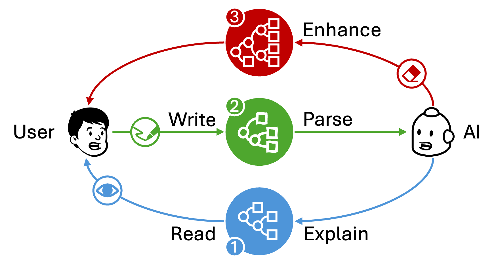
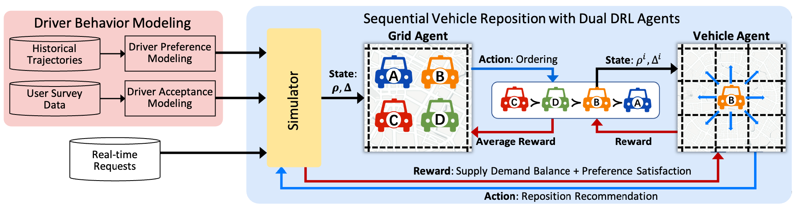
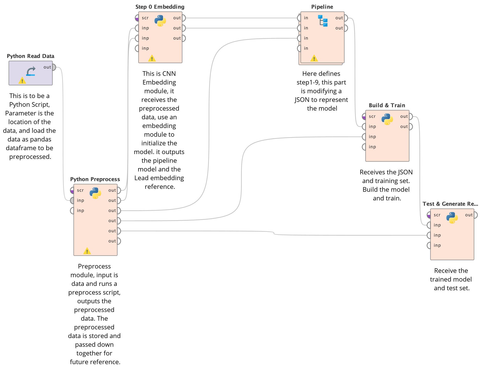
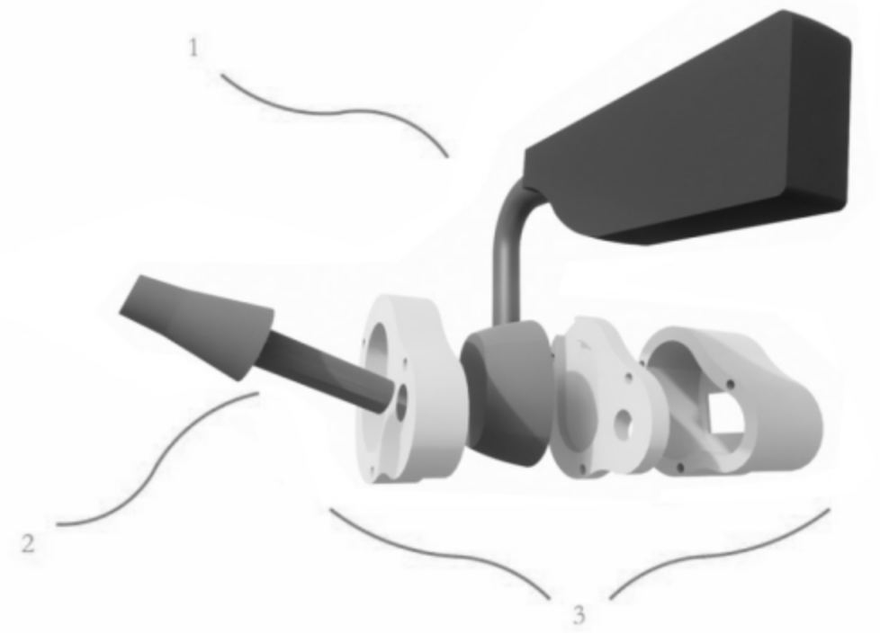

Reinforcement learning
Editable XRL
CoChoice makes an RL agent’s actions, predictions, and values editable through Markov trees. Corrections guide continued learning, helping people and agents coordinate their roles.
Hi, I’m Haoyang. 陈昊阳
I design interactive systems that help people bring their knowledge and intentions into AI. My work turns explanations into ways to revise models, helps people coordinate with learning agents, and gives users control over the context of LLM conversations. I combine human–computer interaction and interpretable machine learning to explore how people and AI can better understand and adapt to one another.
I am a PhD student in the Ubicomp Lab at the National University of Singapore, advised by Prof. Brian Lim. Previously, I was a research assistant at COOLA Lab, Southeast University, working with Prof. Yan Lyu and Prof. Wanyuan Wang.
* Corresponding author

Reinforcement learning
CoChoice makes an RL agent’s actions, predictions, and values editable through Markov trees. Corrections guide continued learning, helping people and agents coordinate their roles.

LLM sensemaking
An interactive graph workspace for LLM-assisted sensemaking. People can branch into alternatives, merge insights, and reorganize conversations while controlling the context available to the model.

Model initialization
Translates a fitted decision tree’s split rules, decision paths, and leaf predictions into neural network initialization for classification and regression. Training data calibrates split softness, and all weights and biases remain trainable.

Editable explanations
CoExplain lets people revise explanations through rules on interpretable attributes. A study with 43 participants found improvements in understanding and alignment compared with read-only explanations.

Transportation
Personalizes ride-hailing vehicle repositioning using driver preferences, response modeling, and reinforcement learning. A field study with 106 professional drivers informed the design.

Medical decision support
A visual programming toolkit for customizable diagnostic models. Doctors can express their preferred examination sequences and thresholds in an interpretable model.

Accessible interaction
An ear-motion input system for accessible interaction with VR devices. A study with 15 volunteers found the approach effective and easy to use.
National University of Singapore